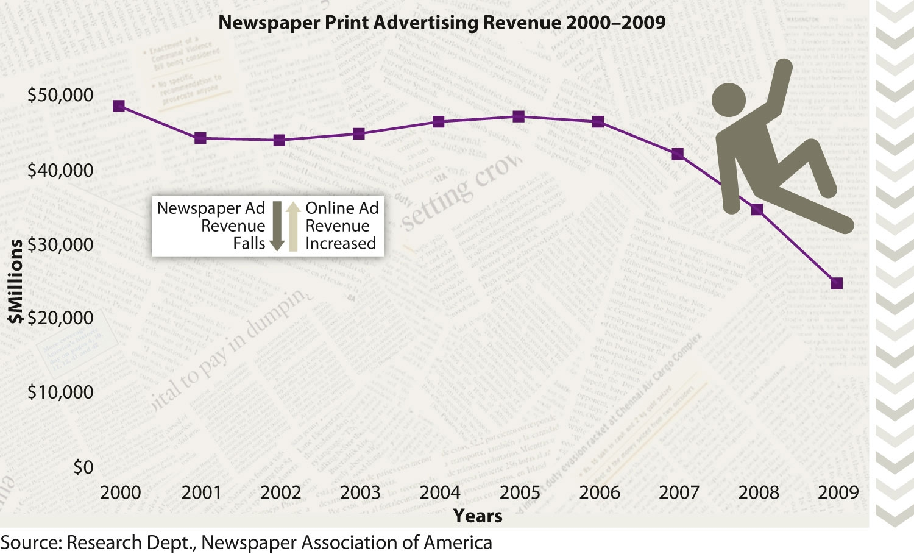
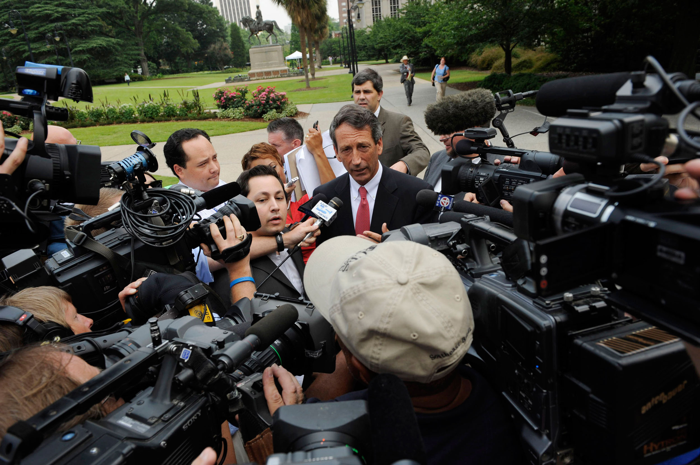
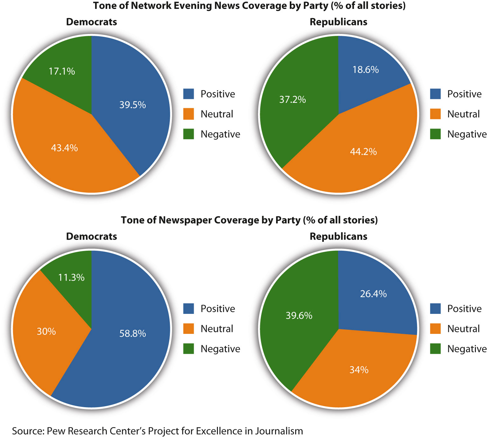

Now more than ever, with the presence of online news sources, news delivery is expected to be instantaneous, and journalists and news agencies face pressure to release stories rapidly to keep up with competing media sources. With this added pressure, standards of accuracy and fairness become more difficult to uphold. What wins when ethical responsibility and bottom-line concerns are at odds? Columnist Ellen Goodman notes that there has always been a tension in journalism between being first and being right. She argues, “In today’s amphetamine world of news junkies, speed trumps thoughtfulness too often.”Ellen Goodman, “Temper ‘Instant’ News Coverage,” Gainesville (FL) Sun, February 7, 1993, http://news.google.com/newspapers?nid=1320&dat=19930207&id=vt4RAAAAIBAJ&sjid=XuoDAAAAIBAJ&pg=5028,1856837. As you read the following sections, decide if you agree with Goodman’s assessment of the state of the news media today.
In 1916, audiences across America tuned in to their radios to hear the first-ever breaking-news coverage of an event as the results of the presidential election between Woodrow Wilson and Charles Evans Hughes were announced from the offices of The New York American. Until that broadcast, news was delivered to American homes once per day in the form of a newspaper, and often this coverage lagged a day or more behind the actual incidents it reported. Whereas much of radio news coverage even into the 1930s involved the reading of newspaper stories and news wires on the air, radio offered something that the newspapers could not: live coverage of special events.Gordon Govier, “The Living Room Fixture,” The Evolution of Radio News, 2007, http://www.radioscribe.com/formats.html.
For decades, the public turned to the family radio when they wanted to hear the most recent coverage of important news. All of that changed, however, in 1963 with the assassination of President John F. Kennedy. CBS correspondent Dan Rather took television audiences live to “the corner window just below the top floor, where the assassin stuck out his 30 caliber rifle,” and for the first time, people were able to see an event nearly as it occurred. This was the beginning of round-the-clock television news coverage, and the American public, while still relying on print news for detailed coverage, came to expect greater immediacy of major event reporting through television and radio broadcasts.Jaime Holguin, “Rather Recalls JFK Assassination,” CBS News, February 28, 2005, http://www.cbsnews.com/stories/2005/02/28/eveningnews/main677096.shtml.
Today, with the widespread availability of Internet news, instant coverage is the norm rather than the exception, and the Internet and cell phones have generally replaced television and radio as the source of immediate information. Visitors to ABCNews.com can watch an evening newscast three and a half hours before it airs on television.Patricia Sullivan, “As the Internet Grows Up, the News Industry Is Forever Changed,” Washington Post, June 19, 2006, http://www.washingtonpost.com/wp-dyn/content/article/2006/06/13/AR2006061300929.html. RSS (which stands for really simple syndication, a standard for the easy syndication of online content) feeds, home pages for major news-delivery sites like Yahoo! News and CNN.com, news tickers, live video streams, blogs, Facebook, Twitter, and a host of other media outlets ensure that news—and rumors of news—circulates within minutes of its occurrence. Additionally, with smartphone applications like those for The New York Times and USA Today, people can access the latest news coverage from almost anywhere.
The development of the Internet as a source of free and immediate access to information has forever changed the structure of the news media. Newspaper, television, and radio news programs have all had to adapt and diversify to compete for a share of the market. As Jeffrey Cole, director of the Center for Digital Communication put it, “For the first time in 60 years, newspapers are back in the breaking news business.” Online, newspapers can compete with broadcast media for immediate coverage, posting articles on their home pages as soon as the stories are written, and supplementing the articles on their websites with audiovisual content. Gone is the era of single-medium newsrooms with predictable deadlines.USC Annenberg School for Communication and Journalism, “Annual Internet Survey by Center for the Digital Future Finds Large Increases in Use of Online Newspapers,” news release, Center for Digital Future, April 2009, http://annenberg.usc.edu/News%20and%20Events/News/090429CDF.aspx.
Not only are traditional news media restructuring, but news consumers are also changing the way they access information. Increasingly, audiences want news on demand; they want to get news when they want it, and they want to be able to gather it from a variety of sources. This is having a significant effect on media revenues. News aggregatorsA website that compiles news headlines from a number of sources for display on its pages. Examples include Newsmap, Google News, and Yahoo! News., websites like Yahoo! News and Google News that compile news headlines from an array of legacy news organizations to display on their pages, have become popular information outlets. Although these websites don’t hire reporters to produce news stories themselves, they get about the same amount of online traffic as websites for legacy news organizationsNews organizations that were around before online news caused a shift in the industry. These organizations have not been replaced, but they have had to diversify. like CNN and The Wall Street Journal. Moreover, many subscribers to print newspapers and magazines are canceling their subscriptions because they can get more current information online at no cost.Pew Project for Excellence in Journalism, The State of the News Media 2010, http://www.stateofthemedia.org/2010/overview_intro.php. Print advertising is down as well. In 2004, The San Francisco Chronicle reported losing $50 million in classified advertising to free online options like Craigslist.Patricia Sullivan, “As the Internet Grows Up, the News Industry Is Forever Changed,” Washington Post, June 19, 2006, http://www.washingtonpost.com/wp-dyn/content/article/2006/06/13/AR2006061300929.html.
This loss of revenue has become a problem in recent years because while newspapers and magazines generate some income from advertisements on their websites, the money is not enough to compensate for lost readership and print ads. Subscriptions and advertising in traditional print media still account for 90 percent of industry funds, which means with less revenue in these areas, the support base for news organizations is dwindling. Newspapers and magazines across the country have had to restructure and scale down. Newspapers now spend $1.6 billion less annually on reporting and editing than they did 10 years ago.Pew Project for Excellence in Journalism, The State of the News Media 2010.
Additionally, reduced budgets combined with greater pressure for immediacy have changed the way information gets reported and disseminated. Newsrooms are asking their staffs to focus on producing first accounts more quickly to feed multiple platforms. This often means that more resources go into distributing information than gathering it. Once news is released online by one source, it spreads rapidly, and other organizations scramble to release accounts, too, in order to keep up, often leaving staff less time for fact-checking and editing. The initial story is then followed quickly by commentary from both professional news organizations and nonprofessional sources on blogs, Twitter, and other social networks.
As a result of this restructuring, certain stories may get distributed, replayed, and commented on almost excessively, while other stories go unnoticed and in-depth coverage that would unearth more facts and context gets neglected. This has led a number of industry professionals to become anxious over the future of the news industry. The Center for Excellence in Journalism has called the news industry today “more reactive than proactive.”Pew Project for Excellence in Journalism, The State of the News Media 2010. Journalist Patricia Sullivan complains, “Right now, almost no online news sites invest in original, in-depth and scrupulously edited news reporting.”Patricia Sullivan, “As the Internet Grows Up, the News Industry Is Forever Changed,” Washington Post, June 19, 2006, http://www.washingtonpost.com/wp-dyn/content/article/2006/06/13/AR2006061300929.html. While some may disagree with Sullivan, in-depth journalism remains an expensive and time-consuming venture that many online news sites, faced with uncertain revenue streams and a growing consumer demand for real-time news updates, are reluctant to bankroll extensively.
Already strapped for funds, news organizations know they have to cater to public demands, and foremost among these demands is speed. When pop-music icon Michael Jackson died on June 26, 2009, at 2:26 p.m., news of his death hit cyberspace by 2:44 p.m. and soon spread nationwide via Twitter. Perhaps surprisingly, the initial report of Jackson’s death was released by celebrity gossip website TMZ. Legacy news sources were slower to publish accounts. The Los Angeles Times, wary of the sourcing of the story, waited to confirm the news and didn’t publish the story on its website until 3:15 p.m., by which time, thanks to the speed of social media, the star’s death was already “old news.”Scott Collins and Greg Braxton, “TV Misses Out as Gossip Website TMZ Reports Michael Jackson’s Death First,” Los Angeles Times, June 26, 2009, http://articles.latimes.com/2009/jun/26/local/me-jackson-media26.
Figure 14.4
American news organizations are losing their audiences to online media and have lost billions in advertising income.
In the preamble to its statement of purpose, the Committee of Concerned Journalists lists as the central purpose of journalism “to provide citizens with accurate and reliable information they need to function in a free society.”Committee of Concerned Journalists, “Statement of Shared Purpose,” Pew Project for Excellence in Journalism, http://www.journalism.org/resources/principles. This theory of the social responsibility of the press is often referred to as the vital information premiseThe widely accepted foundation for principles of journalism ethics, according to which the news media have a responsibility to society as a whole to provide the information it needs to function as a democracy.. Though sometimes worded differently by different organizations, it is widely accepted in the journalism community as the foundation for any principles of media ethics.Jeremy Iggers, Good News, Bad News: Journalism Ethics and the Public Interest (Boulder, CO: Westview Press, 1999), 46. What are those specific principles? Here are some that are particularly important for journalists in the current media climate.
If the basis for the principles of ethical news reporting is giving citizens the information they need to function in a democratic society, then that information must be presented accurately. Journalists should be careful to verify the facts before they report them. As the Committee of Concerned Journalists asserts, “Accuracy is the foundation upon which everything else is built—context, interpretation, comment, criticism, analysis and debate,” so reliable news sources are essential if citizens are to have a clear understanding of the society in which they live.Committee of Concerned Journalists, “Statement of Shared Purpose,” Pew Project for Excellence in Journalism, http://www.journalism.org/resources/principles. Furthermore, although news organizations have a professional responsibility toward advertisers and shareholders, their commitment is always to citizens first. This means that journalists must report the facts truthfully and without omission, even if they are not in the best interest of advertisers, shareholders, or friends.
Reporting issues fairly requires not only factual accuracy, but also lack of favoritism toward any organization, political group, ideology, or other agenda. The Society of Professional Journalists stipulates that journalists should refuse gifts and favors and avoid political involvement or public office if these things compromise journalistic integrity.Society of Professional Journalists, “SPJ Code of Ethics,” http://www.spj.org/ethicscode.asp. Additionally, journalists should avoid inflating stories for sensation and be as transparent as possible about their sources of information so that the public can investigate the issues further on their own.Committee of Concerned Journalists, “Statement of Shared Purpose,” Pew Project for Excellence in Journalism, http://www.journalism.org/resources/principles.
All sides of an issue should be presented in a news story. Of course, all journalists have a perspective from which they write, but a clear distinction should be made between news reports and editorial content.American Society of News Editors, “ASNE’s Statement of Principles,” August 2009, http://asne.org/article_view/articleid/325/asnes-statement-of-principles.aspx.
Many issues in the news are layered and highly complex. Developing a thorough understanding of issues requires dedication and a sometimes lengthy investigation, and, especially in a world where rapid reporting is the norm, there can be a temptation to gloss over the finer points of an issue for the sake of efficiency. Additionally, most consumers of news, increasingly busy and overwhelmed by the amount of information available, want stories that can be quickly digested and easily comprehended. However, as the Committee of Concerned Journalists points out, the media must balance what readers want with what they need but cannot anticipate.Committee of Concerned Journalists, “Statement of Shared Purpose,” Pew Project for Excellence in Journalism, http://www.journalism.org/resources/principles. Oversimplifying issues, whether for the sake of a quick story or to satisfy public tastes, becomes a violation of the vital information premise.Society of Professional Journalists, “SPJ Code of Ethics,” http://www.spj.org/ethicscode.asp.
When discussing what he considers to be one of the key issues in professional journalism, media ethicist Jeremy Iggers points out that because democracy means the widest possible participation of citizens in public life, diversity in journalism is of fundamental importance.Jeremy Iggers, Good News, Bad News: Journalism Ethics and the Public Interest (Boulder, CO: Westview Press, 1999), 138. Not only should newsroom staff represent a diversity of gender and races, but journalists should also speak for all groups in society—“not just those with attractive demographics,” as the Committee for Concerned Journalists puts it. Journalists should represent the underrepresented because ignoring citizens is a form of disenfranchisement.Committee of Concerned Journalists, “Statement of Shared Purpose,” Pew Project for Excellence in Journalism, http://www.journalism.org/resources/principles.
When the framers of the U.S. Constitution guaranteed freedom of the press, one of the things they had in mind was the ability of the news media to serve as a watchdog over those in positions of power.Committee of Concerned Journalists, “Statement of Shared Purpose,” Pew Project for Excellence in Journalism, http://www.journalism.org/resources/principles. It is the duty of the press to ensure that business is conducted in the open and that government actions are public. One famous example of the media fulfilling its watchdog role was The Washington Post’s investigation of the 1972 Watergate scandal. During Richard Nixon’s presidency, journalists at the Post uncovered information linking government agencies and officials to the break-in at the Democratic National Committee headquarters at the Watergate complex as part of an attempt to sabotage the Democratic campaign and guarantee Nixon’s reelection.Richard M. Flanagan and Louis W. Koenig, “Watergate,” in Dictionary of American History, ed. Stanley I. Kutler, 3rd ed. (New York: Charles Scribner’s Sons, 2003), 8:425. Media coverage of the scandal increased publicity and ultimately put pressure on the government that led to an investigation and the prosecution of many who were involved.“The Government and Watergate,” in American Decades, ed. Judith S. Baughman and others (Detroit: Gale, 2001), vol. 8. In the past decade, the media has uncovered incriminating information about various Senators and Congressmen, resulting in charges of corruption, tax evasion, conspiracy, and fraud.
While CNN and other news networks took some criticism for their delay in reporting Michael Jackson’s death in 2009, others commended the news organizations for waiting for official confirmation. For many journalists and members of the public, ensuring accuracy, even when it means delays, is a hallmark of responsible journalism.
More than 400 journalistic codes of ethics have been produced by various unions and associations worldwide.Aidan White, To Tell You the Truth: The Ethical Journalist Initiative (Brussels: International Federation of Journalists, 2008), iii. Where they may differ on specifics, these codes of ethics agree that the news media’s top obligation is to report the truth. When journalists say this, of course, they don’t mean truth in an absolute, philosophical sense; they mean practical truth, the truth that involves reporting the facts as faithfully and accurately as possible. This notion of truth includes an accurate representation of information from reliable sources, but it also includes a complete representation, one that presents multiple perspectives on an issue and does not suppress vital information.
Many codes of ethics stress that the press has a duty to continue its investigation of the facts, even after initially reporting them, and to rectify any inaccuracies that may have occurred in the initial coverage of an issue.Aidan White, To Tell You the Truth: The Ethical Journalist Initiative (Brussels: International Federation of Journalists, 2008), ii; Committee of Concerned Journalists, “Statement of Shared Purpose,” Pew Project for Excellence in Journalism, http://www.journalism.org/resources/principles. One example is The Huffington Post, a news website that, with over 2,000 bloggers, has the world’s most linked-to blog. Blogging is sometimes criticized by more traditional journalists for the tendency, among some blogs, to include biases, unreliable information, and unfounded opinions—in other words, for instances of violating journalistic codes of ethics. However, The Huffington Post requires all of its pass-holding writers to fact-check and to correct any factual errors within 24 hours or lose their privileges.Aidan White, To Tell You the Truth: The Ethical Journalist Initiative (Brussels: International Federation of Journalists, 2008), 76.
Along with an emphasis on the truth, codes of ethics stress loyalty and duty to citizens as a standard of primary importance. Of course, truth telling is an essential component of this loyalty, but additionally, the concern here is in reminding journalists whom their work serves. Especially in the current environment, in which media outlets face increased financial pressure, there is a tension between responsible journalism and the demands for profit. Aiden White notes that corporate and political influences are of increasing concern in this environment, but he reminds journalists that while they have duties to other constituencies, “media products are not just economic.” Journalists must hold the larger public interest above other interests.Aidan White, To Tell You the Truth: The Ethical Journalist Initiative (Brussels: International Federation of Journalists, 2008), 8.
Another challenge often posed by bottom-line concerns and the pressure for a good story is sensitivity toward, and protection of, those involved in the news. Responsible journalists should strive to balance disclosure of the news with a respect for individual privacy. Finding this balance can sometimes be a challenge. On one hand, journalists should never expose private information that could be harmful to individuals for the sake of sensationalizing a story. Issues like family life, sexual behavior, sexual orientation, or medical conditions, for instance, are generally considered tabloid material that would violate the privacy of those involved.
On the other hand, there are times when the private lives of individuals must be made public in the interests of serving the common good. One example was the 2009 media scandal surrounding South Carolina Governor Mark Sanford, who, after media investigations over his weeklong disappearance in June of that year, admitted to flying to Argentina to visit his mistress. After it was revealed that Sanford had used public funds for his private travel, he resigned from his office as the chairman of the Republican Governors’ Association.Associated Press, “Sanford Took Personal Trips on Plane,” CBS News, August 9, 2009, http://www.cbsnews.com/stories/2009/08/09/politics/main5228211.shtml. Although the publicity surrounding this private matter was clearly painful for the governor and his family, releasing information about the incident, particularly regarding the misuse of public funds, was in the best interest of the citizens. The International Federation of Journalists offers three factors as a rough guideline in cases where privacy is in danger of being violated: the nature of the individual’s place in society, the individual’s reputation, and his or her place in public life. Politicians, judges, and others in elected office often must forgo their expectations of privacy for reasons of democracy and accountability—the public’s right to know if their elected officials are engaged in unethical or criminal conduct generally trumps an individual’s right to privacy.Aidan White, To Tell You the Truth: The Ethical Journalist Initiative (Brussels: International Federation of Journalists, 2008), 136. These factors, in recent years, have resulted in public scandals surrounding other political leaders—Representative Anthony Weiner, former Governor Arnold Schwarzenegger, and presidential hopeful John Edwards, to name a few.
Figure 14.5
As shown in the scandal surrounding former South Carolina Governor Mark Sanford, drawing the line between exploiting individuals’ private lives to sell stories and disclosing information in the public interest is not always clear.
Because the press has a duty to serve the best interests of the citizens in a democracy, it is important that journalists act independently and that they remain neutral in their presentation of information. Objectivity was once the common term used to support this notion. More recently, however, there has been wider acceptance of the fact that reporting always occurs through a lens of personal experience, culture, beliefs, and background that ultimately all influence the way any individual subjectively perceives a situation.Howard A. Myrick, “The Search for Objectivity in Journalism,” USA Today (Society for the Advancement of Education), November 2002, http://findarticles.com/p/articles/mi_m1272/is_2690_131/ai_94384327/?tag=content;col1. If this were not the case—if there were only one standard way everyone perceived, investigated, and reported on a story—what would be the value of including racial and gender diversity in the newsroom? Nevertheless, responsible journalism requires journalists to avoid favoritism and to present news that is fair and offers a complete picture of the issue.
The principle of journalistic independence is an important component of the news media’s watchdog role. Journalists should avoid conflicts of interest—financial, political, or otherwise—and, when conflicts of interest are unavoidable, it is a journalist’s ethical responsibility to disclose those.Society of Professional Journalists, “SPJ Code of Ethics,” http://www.spj.org/ethicscode.asp. One example involving conflict of interest centers on recent talk of government bailouts for the news media, similar to the bailouts for the auto and banking industries. However, many journalists are concerned that government support of this kind would present a conflict of interest and interfere with the media’s watchdog role.David Nicklaus, “Bailing Out Journalism Would Threaten Its Independence,” St. Louis Post-Dispatch, June 8, 2010, http://more.stltoday.com/stltoday/business/columnists.nsf/davidnicklaus/story/7db2f5de844ed63f8625773c000da74b?OpenDocument.
In addition to maintaining independence, the news media should allow for commentary and opposition. Leaving space for citizens to voice concerns about journalistic conduct is an important part of serving the public interest and keeping the public’s trust.
While principles of ethical journalism require journalists to remain neutral in their reporting, there is, as previously mentioned, always a degree of bias that will be present in any news reporting due to the element of personal perspective that any journalist will naturally bring to his or her work. A 2005 in-depth study by political scientists at UCLA found that, of 20 media outlets, 18 had a perspective in their news reporting that was left of the national average. Of those 20, only Fox News and The Washington Times scored to the right of the average U.S. voter.Meg Sullivan, “Media Bias is Real, Finds UCLA Political Scientist,” news release, UCLA, December 14, 2005, http://newsroom.ucla.edu/portal/ucla/Media-Bias-Is-Real-Finds-UCLA-6664.aspx.
What, exactly, does political bias in the media look like? In the UCLA study, news sources were scored based on their sources of information and expert opinion. The news outlets with the most liberal slant—CBS News and The New York Times—cited liberal think tanks and policy groups with a much greater frequency than they cited conservative ones.Tim Groseclose and Jeffrey Milyo, “A Measure of Media Bias,” Quarterly Journal of Economics 120, no. 4 (2005), http://www.sscnet.ucla.edu/polisci/faculty/groseclose/pdfs/MediaBias.pdf. Political bias can also be observed by examining which stories a network or newspaper chooses to report. According to media analyst Seth Ackerman, the right-leaning Fox News network reports news stories that favor the Republican Party or show the Democratic Party in a negative light. Additionally, Fox’s panels of pundits who offer commentary after the news tend to be politically conservative or moderate far more often than liberal.Seth Ackerman, “The Most Biased Name in the News,” FAIR: Fairness and Accuracy in Reporting, July/August 2001, http://www.fair.org/index.php?page=1067.
Figure 14.6
Some argue that there is a politically left bias in the news media.
Such biases in news media may have an effect on public opinion. However, while the picture a journalist or particular news outlet creates may not be entirely objective, journalists with integrity will strive to be fair and comprehensive, offering opposing views and citing their sources of information. Members of the public should remember that they also have a responsibility to be active, rather than passive, consumers of information. Good media consumers use critical analysis skills while reading news reports. If a story is presented conscientiously in the news, a reader or viewer will have the resources he or she needs to research an issue further and draw his or her own conclusions. As you continue reading the chapter, keep in mind the ethical obligations of those who work in mass media and the potential consequences of their failure to uphold them.
The Internet has brought about profound and rapid changes in the structuring, delivery, and economics of news media.
Conduct your own survey of political bias in the news. Choose either a television network or newspaper known for more liberal tendencies, such as CNN or The New York Times, and a network or newspaper known for more conservative reporting, such as Fox News or The Washington Times. Examine both sources’ coverage of the same news story (not a column or editorial). Then answer the following short-answer questions. Each response should be one to two paragraphs.